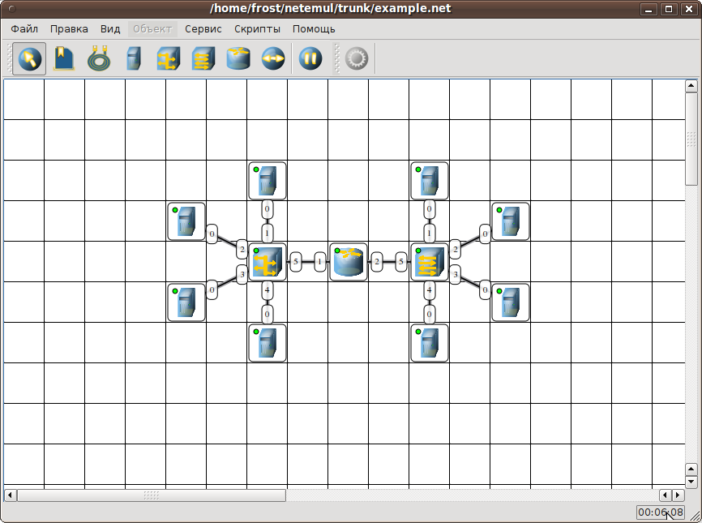
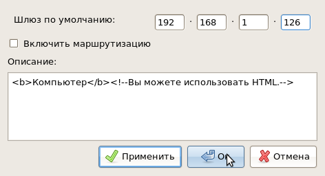
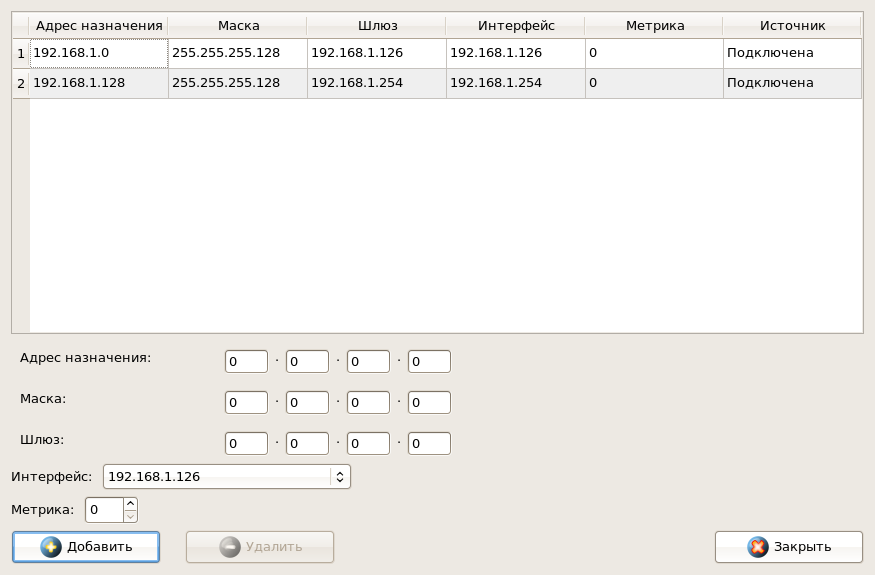
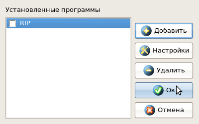

| Руководство NetEmul | ||
|---|---|---|
| Пред. | След. | |
В предыдущем разделе мы построили простую сеть. Здесь мы ее немного усовершенствуем, для того, чтобы показать Вам как можно больше возможностей и настроек.
Приступим.
Для начала, мы достроем сеть. В нашей конечной сети будут задействованы все устройства. Вот наша сеть:

Пожалуй, начнем с того, что разобьем нашу сеть на 2 подсети. Допустим, у нас есть пул адресов сети класса С. Разобьем его на 2 части: 192.168.1.0-192.168.1.127 и 192.168.1.128-192.168.1.255 с маской 255.255.255.128.
Авторы надеются, что Вы сможете самостоятельно присвоить ip-адреса всем узлам. Это не учебное пособие ко компьютерным сетям, поэтому здесь будет рассмотрено только то, что непосредственно относится к программе.
Для настройки ip-адреса интерфейса открываем окно "Интерфейсы" (уже упомянутое нами выше). Выставляем ip-адреса и маски подсети в соответствующих строках каждого интерфейса. После нажатия на кнопку "Ок" или "Применить", мы можем наблюдать,как индикатор поменял цвет с желтого на зеленый и от нашего устройства, которому сейчас дали адрес, побежал кадр Arp-протокола. Это нужно для того, чтобы выявить нет ли в нашей сети повторения адресов. Если Вы все таки что-то не так сделали и адреса совпали, то появится информативное сообщение, после которого Вы должны будете самостоятельно разрешить эту ситуацию для корректной работы сети.
После того, как мы расставили все ip-адреса конечным узлам, у нас уже есть в принципе работающие подсети. Но только каждая работает автономно и послать сообщения из одной такой подсети в другую мы не сможем. Соответственно, на этом мы не остановимся.
Далее мы дадим адреса каждому интерфейсу маршрутизатора. Это сделать не трудно, поскольку действия анологичны тем, что Вы делали при настройке компьютеров. Но тем не менее, мы опять ничего не сможем послать до тех пор, пока на конечных узлах не будут установлены шлюзы по умолчанию.

В подсети левее маршрутизатора у всех узлов должен быть шлюз 192.168.1.126, правее - 192.168.1.254.
На рисунке выше есть поле "Описание" в котором Вы можете дать имя комьютеру или сделать какое-то описание, которое в дальнейшем будет всплывать в подсказке при наведении мыши на устройство. Удобно дать имена в этом поле, т.к. при открытии журнула для устройства заголовок будет содержать именно это описание. У остальных устройств тоже есть окно "Свойства", но их содержимое немного отличается. Рекомендуем их изучить.
Шлюзы мы задали и теперь у нас полностью рабочая сеть. Но тестировать ее работоспособность мы будем в следующем разделе, а здесь рассмотрим еще несколько свойств объектов.
Сейчас мы рассмотрим поверхностно различные пункты в меню "Объект", исключительно для того, чтобы дать Вам отправную точку для самостояельного и более тщательного изучения как возможностей программы, так и принципов работы каждого устройства. Конечно в следующем разделе будут более подробно разобраны некоторые пункты, но все же авторы придерживаются такого мнения: ничто так не ускоряет процесс обучения, как самостоятельное исследование интересующего материала.
Начнем с коммутатора.
Откроем его таблицу коммутации. Сейчас она абсолютно пустая, т.к. не было ни одной передачи данных. Но при этом у нас есть возможность добавить статическую запись, для этого необходимо заполнить все поля соответствующими данными и нажать кнопку "Добавить".
Перейдем к маршрутизатору.
В контекстном меню нас интересуют пункты: Таблица маршрутизации, Arp-таблица, Программы.
Arp-таблица тоже пуста (по той же причине, что и таблица коммутации), но в нее также можно добавить статические записи.
Очень важный пункт - таблица маршрутизации. Уже сейчас мы видим в ней 2 записи.

Эти записи соответствуют нашим подсетям, о чем говорят надписи в столбце Источник. В качестве источника может быть протокол RIP, установить который можно с помощью пункта Программы. В столбец Шлюз заносится адрес следующего маршрутизатора или наш адрес, если такого нет. В столбце Интерфейс адрес порта, с которого будем отправлять данные. В эту таблицу тоже можно занести статические записи, а в столбце Источник появится надпись Статическая.
Окно Программы выглядит следующим образом:

Соответственно Вы можете установить, настроить, удалить программы. Надо сказать, что здесь включены только те программы, которые могут понадобиться для работы сети.
Это был краткий обзор возможностей. Далее самое интересное...
| Пред. | Начало | След. |
| Построение сети | На уровень выше | Отправка пакетов |